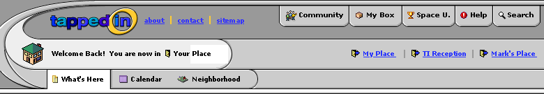
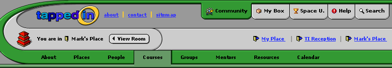

Again, I've just stuck to the top part of the interface for the time being. Here are two possible scenarios. One thing I did not change was the word for "My Box"- I'm not sure there was much resolution on that name. Part of what I like here is that there is more connection between the room icon and the room tabs.
In this next screen, the user has since moved to a new room and clicked on the community tab for course information.
